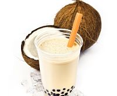
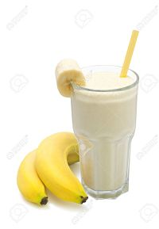

En este local comercial te ofrecemos la mas ricos y deliciosos batidos. los batidos son de multiples sabores. Nuestro mejor batido que contenemos es el de coco además, tenemos otros que son muy delicioso que es el de mora, frutilla, banana.
Además contamos con la venta del acopañante del batido que son las tostadas posemos tostadas de variados precios desde la mas economica hasta la más carita.
Batido de coco
Como ya más anten mecionado tenemos en batido de coco. Este batido esta preparado con su ingrediente principal que es el coco además, se le aplica escencia de vainilla,azucár y hielo para que salga con una tectura cremosita. su precio es tan solo de "50 centavos"

Ingredientes
1.-Una taza de leche 2.-Media taza de coco desidratado 3.-50 Gramos de azucar 4.-Una pisca de canela en polvo 5.-Escencia de vainilla liquida
Batido de mora
Este batido es de consistencia muy especial debido aque mucho de nuestros clientes lo piden por su maravilloso sabor y además, por que tiene una gran cantidad de vitaminas para las personas que practican algun deporte en especial su precio es de "50 centavos"
El batido de fresas o frutilla tiene un savor maravilloso y consistencia fenomenal además, se alia con cualquiera de nuestra tostadas su precio es de"50 centavos"
El batido de banana es uno de los batidos más clasicos conocidos por las personas este batido contiene como uno de su ingredientes principales la lecha además, se le aplica escencia sabor a bainilla y con una cierta cantidad de azucar sim embargo, aplicarle la azucar es opcional por el cliente por que el banano es una de las que su abor es bastante dulce su precio es de "50 centavos"

ingredientes
1.-Guineos o bananas maduras 2.-azucar 3.-Una cucharada de esencia de vainilla 4.-Dos tazas de leche 5.-Hielo picado
Además te ofrecemos las deliciosas tostas
presiona la imagen"tostads"para ver nuestro menu
¿Cómo puedo lograr hacer mi batido en casa?
Aqui tenemos la evidincia de como hacemos nuestros productos:
 ingredientes
ingredientes